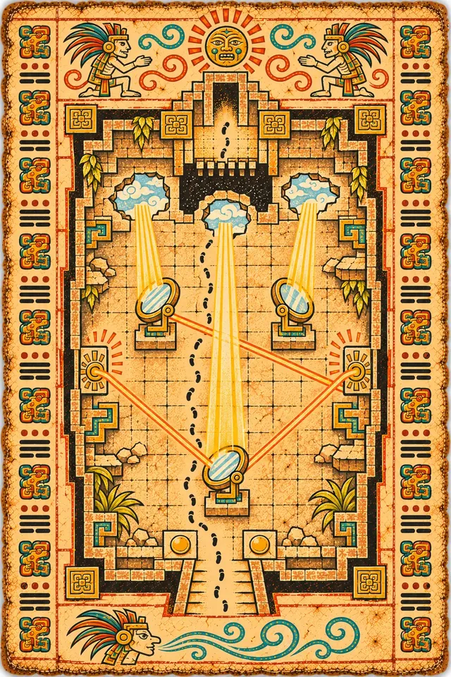
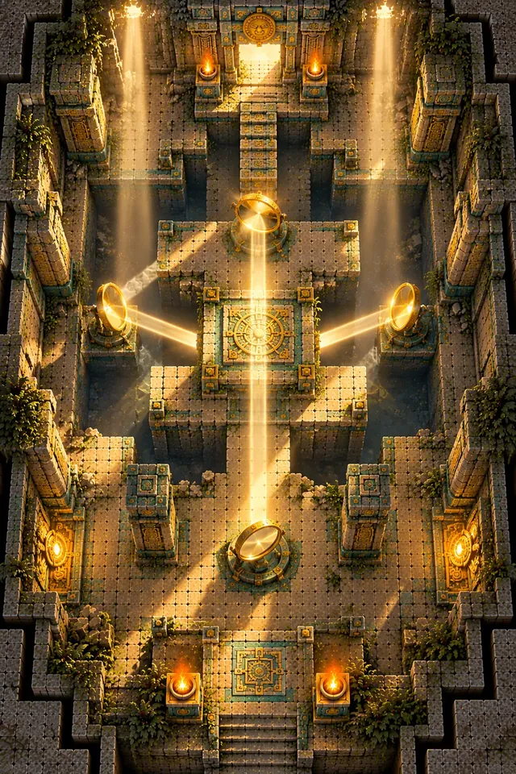

T5A
The Sun Shaft Hall
Sun shafts pour through a broken ceiling. Turn the big bronze mirrors to bounce a beam into the glyph receivers, and a stone bridge rises. Enemies who stand in a beam burn.
Mirror Shades walk the hall: faceless figures that split into copies, and only the real one has a gold crack. Then the sun moves, and you have to do it all again.

